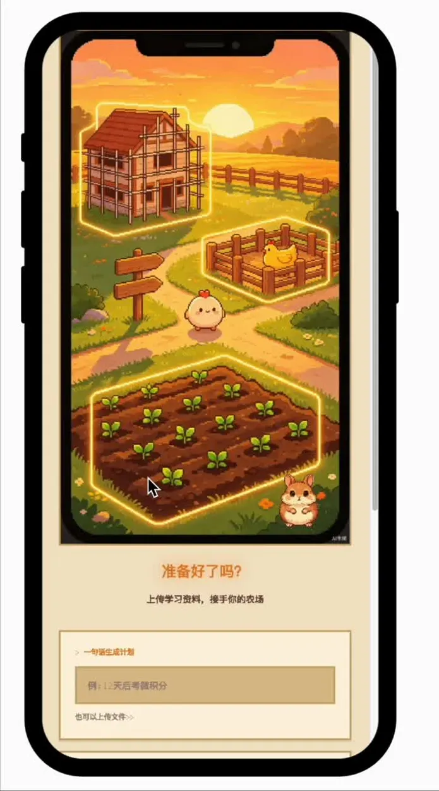

返回运营项目索引
返回运营项目索引StepMate
阅读项目文档 ↓StepMate 是一款面向冲刺备考场景的 AI 伴学产品，定位“剧情式智能备考搭子”，服务期末、考研、四六级等倒计时期用户。
核心机制是“AI 拆解 + 剧情驱动”：用户只需上传教材、真题等资料并输入考试日期，AI 自动识别知识结构与薄弱点，将复习任务拆解到“今天看哪几页、做哪几题”的颗粒度，并按优先级动态排程。产品以游戏化剧情和虚拟形象陪伴替代传统惩罚式打卡，降低备考焦虑，提升执行黏性。
差异化在于：不做长期习惯养成，也不做通用待办，而是把“不知道从哪开始”到“一步步做完”做成闭环，让规划与执行合一。

项目文档
汇报逐页阅读
第 1 页
STEPMATE
We Are Here
With You
Presented by 1008(6)
STEPMATE陪你走完全程
第 2 页
Types of Multimedia:
textual, visual and audio elements
Multimedia
1.
中国数字教育市场
规模达 5190 亿元
同比增长10.77%
用户规模3.27亿人
项目背景
知识付费市场
规模达2808.8亿元
用户规模 6.4亿 人
35岁以下用户
占比58.8%
AI情感陪伴市场
2025-2028年，市场规模预计从38.66亿元跃升至595.06亿元
年复合增长率148.74%
情感陪伴与教育工具的融合，存在明确的市场空白。
—市场需求
STEPMATE
背景介绍
第 3 页
1.
项目背景
必要性
大量学习者拥有明确的学习意愿和目标
却迟迟无法开始行动
或在执行过程中轻易放弃
可行性
大语言模型→智能任务拆解
虚拟形象技术→情绪陪伴
技术条件已经成熟
但市场上尚未出现一款将
AI学习规划、目标可视化、虚拟陪伴体验三者深度融合的学习工具
STEPMATE
第 4 页
需要目标规划以及专注管理
目标用户—短期备考人群
①不知道从哪里开始复习 ②知道该做什么但不想动
③复习过程枯燥孤独 ④缺乏即时反馈，不知道自己的复习效果
对“有意思”的东西有好奇心，会因为“好玩”而尝试
被引导、被陪伴，而不是被锁住
STEPMATE
精准用户定位
2.
第 5 页
典型代表：
谢同学：知道怎么开始，但是不想动”
徐同学：重度拖延，作业拖到最后一天晚上
STEPMATE
典型代表：
赵同学：“相关数学课太多，完全不知道从哪里开始”
核心痛点：
面对大量的资料和任务时缺乏拆解能力，无法将模糊目标转化为具体行动。
有学习意愿但缺乏方法论与规划能力
拖延型
核心痛点：
有明确目标、有学习资料，但启动阻力极大
能拖就拖，直到DDL前才被迫行动
任务量越大越不想开始，陷入“拖延→焦虑→更拖延”的恶性循环
功能偏好：
AI自动拆解任务，降低启动的心理压力
低门槛的启动引导，如打开软件直接弹出“当下的第一件小事”
直接可用的学习素材
目标用户分类
有心无力型
功能偏好：
阶梯式复习路径图
知识雷达图，直观看到薄弱项
每个任务精确到具体页码、题号、
预估时长
预测分数曲线，按目前进度，
期末能考多少分
孤独枯燥型
典型代表：
调查发现81.31%表示“会因虚拟形象更愿意打开软件”
多邻国持续打卡用户、Focus Friend用户
核心痛点：
长期独自备考缺乏情感支撑
学习过程枯燥易倦怠，缺乏即时反馈导致动力递减
注意力容易被手机分散，需要外部陪伴来维持专注状态
功能偏好：
接受可爱安静的虚拟形象陪伴，完成任务后偶尔弹出鼓励
愿意为解锁新皮肤、新剧情、新互动持续学习
需要连续打卡成长曲线、连击奖励等长效激励机制
第 6 页
Not a better timer. A better way to begin.
StepMate=Step+Mate
产品介绍： · 陪你一步步走完
🧠 AI自动拆解：
把目标拆成每日具体任务
精确到详细做法
🎮 剧情引导：
用好奇心让你每天
“想回来看看”
🐹 陪伴激励：
专注时小鼠陪你
“任务进度=搬砖进度”
STEPMATE
📱 横屏专注监督
横屏锁定进入专注模式，显示正/倒记时
STEPMATE
第 7 页
step 1：目标输入与智能拆解
规划
用户直接输入学习目标
支持文字描述 + 资料上传
（ PDF / 教材 / 真题 ）
AI识别目标、时间、当前水平
AI进行知识抽取与结构化分析
层级式任务拆解
总目标 → 阶段 → 步骤 → 每日任务
AI生成实现目标需要的步骤，按照STEP1、STEP2…进行细分，在每个步骤下面附带有具体的学习计划和要求
学习《xx》第x页-第x页
看b站上的xxx网课第x讲
推荐xxx教辅做题练习
🧠 AI规划 —— 从“我不知道”到“照着做”
step 2：约束输入（细化）
截止期限：X月X日
紧迫程度：紧急 / 一般 / 不紧急
掌握程度：从头补天/ 温习巩固型
step 4：执行反馈与动态调整
用户完成一个时间段的任务后，进行评价反馈→ 未完成部分自动顺延至后续安排
AI根据用户反馈实时优化后续计划：
正确率>85% → 缩减后续任务
正确率<50% → 插入加练任务
连续3天超时 → 自动降低每日任务量
考前≤3天 → 自动切换冲刺模式
STEPMATE
💡 可选项：用户可提前完成画像自测（学习习惯/专注时长），让AI规划更贴合个人节奏
AI
第 8 页
你确定？
横屏监督
每个小阶段的任务开始执行后，用户可以自主选择
竖屏白名单模式 横屏锁机模式
白名单制：预先将部分学习相关的App添加至"允许使用列表"中。在专注期间，打开其他娱乐/社交类App时会被系统拦截或提醒。
横屏锁机：显示当前正在完成的任务内容，左/右下角会有一个正在搬砖的小仓鼠陪伴你一起学习，搬砖建房子的进度和学习进度相匹配。
横屏模式向竖屏切换的瞬间
屏幕会跳出
“你确定要离开学习吗？”
你想切屏？
STEPMATE
第 9 页
1.
2.
3.
4.
爱搬砖的小仓鼠、疯狂长出血肉的骷髅小骨……
IP
形象
STEPMATE
……
独特IP形象—— 你的专属学习搭子
第 10 页
一场风暴冲垮了你的房屋、淹没了你的农田，鼠鼠究竟要怎么办才好？
除了接管废弃农村，每次学习你还可以选择骷髅寻觅、海上垂钓探险…
1.
2.
多条故事线任你选择
STEPMATE
不同剧情线
第 11 页
Use links to go to a different page inside your design. Highlight text, click on the link icon 🔗 above the text , and select the page you want to connect.
1.
2.
3.
不同剧情线，不同主角陪伴用户完成学习目标🎯
Different users, different ways to accompany.
剧情引导
废弃农场经营
骷髅长出血肉
海上木筏生存
治愈
搞笑
成就
基础模式
进阶模式
进阶模式
STEPMATE
——让学习不再枯燥
第 12 页
🥜AI规划：3次/天
完成当日全部任务
🐿️故事线：小松鼠Nory全免费！
连续打卡3天
故事线章节通关
1.
不够用？
关键剧情节点
随机日常互动
基础模式
我们希望免费基础版也能给用户
带来良好的体验
STEPMATE
商业化模式：免费引流→付费转化→持续复购
第 13 页
故事线解锁
¥8.8/条 或 ¥18.8/三条
皮肤换装
各形象的皮肤/装扮/场景
¥2-15/件
2.
规划次数直购
¥6/5次
¥12/12次
¥25/30次
进阶模式
只需要
就能获得更丰富的体验
¥9.9
STEPMATE
商业化模式：免费引流→付费转化→持续复购
第 14 页
STEPMATE
We Are Here
With You
Presented by 1008(6)
STEPMATE陪你走完全程
团队项目说明
第 1 步 先把项目和这次视频认清楚
01 项目叫什么 现在做到哪一步
本次资料版本 / 日期：V1 组内版，2026-07-12。可用材料：《stepmate.pptx》14 页（路演版）、《stepmate功能简介.docx》、《StepMate路演讲稿.docx》、单页 HTML 界面原型 stepmate.html、任务总览界面参考图 1 张。
当前阶段：原型阶段。提案已成型，界面已做成可点击的单页原型，产品未上线。
已完成范围：目标用户三类分层与典型代表、四段式功能流程（目标输入 → 约束输入 → 执行反馈 → 动态调整）、横屏锁机专注与 IP 陪伴机制、三条剧情线与商业化定价设想、14 页路演材料、可点击 HTML 原型（覆盖「计划概览 / 学习记录」两屏）。
尚未完成范围：真实 AI 资料拆解与动态重排能力、移动端客户端、横屏锁机与白名单的系统级实现、剧情内容生产、任何用户测试。
02 这支视频在哪里 怎样被观看
现场能否放音、需要哪种语言：建议可放音；中文旁白＋中文字幕。若为静音轮播环境，须做到「全程字幕可独立看懂」，旁白信息不依赖声音传达。
硬性时长上限；没有则写「按内容确定」：按内容确定。建议 2–3 分钟（信息量见 Q04、Q16，压到 90 秒需砍掉 I06 与 I07 之一）
第 2 步 让制作方知道讲给谁 讲完留下什么
03 主要观众是谁 他们最想知道什么
主要观众（具体到身份）：训练营成果展示现场的评委老师与同营同学——他们第一次接触 StepMate，大多不是「此刻正在备考」的人，对 AI 伴学类产品也没有既定印象。
他们已经知道什么：知道「备考很难、拖延很普遍」这类常识；知道番茄钟、待办清单、学习博主计划表这些旧办法；不知道 AI 能把一份教材 PDF 拆到「今天看 P30–45、47 分钟」这个颗粒度。
他们最关心的问题 1：这东西和我手机里已有的番茄钟／打卡 App 到底差在哪？——差在「计划是 AI 从你的资料里拆出来的，而不是你自己编的」，且执行反馈会回流改写明天。
他们最关心的问题 2：一个学生小组真做出来了吗，还是只是一个 PPT 点子？——须诚实回答：目前是设计＋可点击原型，AI 能力未接真模型。
还需兼顾的其他观众：短期备考的在校生（潜在用户，看片后可能来展台试玩）；运营／宣传岗（需要能截取的画面）。
04 看完后 必须记住哪三件事
必须记住 1：观众应理解——短期备考的人卡住的不是资料不够，而是「不知道从哪开始」和「开始了也走不完」，这是启动阻力，不是懒惰。
必须记住 2：观众应理解——StepMate 把模糊目标拆成「今天这几件小事」：读完你上传的教材、课件、真题，拆到页码、题号、分钟，并按你真实的完成情况重排明天。
必须记住 3：观众应理解——它不靠惩罚靠陪伴：横屏锁机时有一只搬砖的小仓鼠陪你，剧情是任务完成后的奖励，不是开始前的门槛。
看完后希望观众做什么，或能复述什么：能对别人复述一句「它是一个把大目标拆成今天能做的小事、还有个小动物陪着你的剧情式备考搭子」；愿意到展台扫码试玩原型；评委能说出它与番茄钟／打卡 App 的差别在「计划来源」和「反馈回流」两点上。
若篇幅有限，最不能删的是哪一点、为什么：第 2 点。这是它与一切计时器类工具唯一的硬差异；剧情、IP、皮肤都可以删，删掉拆解，产品就退化成又一个番茄钟，全片立不住。
第 3 步 先用平实语言说清项目再列全用户
05 怎样用一句话介绍这个项目
为谁：为【期末还剩两周、考研还剩三十天、四六级还剩三周的短期备考在校生】
解决什么问题：解决【有意愿、有资料，却不知道从哪下手；坐到桌前又被手机打断；计划一拖就废】
主要通过什么方式：通过【AI 读你的资料自动拆到每日任务＋横屏锁机专注＋虚拟形象与剧情陪伴】
最后得到什么：让使用者得到【每天一份「照着做就行」的清单，和看得见的进度】
合成一句话：为短期备考的在校生，通过 AI 把资料拆成每天能做完的小任务、再用横屏专注和小动物陪伴把人按在桌前，解决「知道要学但开始不了、开始了也走不完」，让他们每天拿到一份照着做就能完成的清单。
06 本片必须讲到哪些产品使用者
用户类别 1 / 正在完成的任务 / 本片主次：拖延型（典型：谢同学「知道怎么开始，但不想动」；徐同学「重度拖延，作业拖到最后一晚」）／在 DDL 前把该复习的补完／主线，第一个讲
用户类别 2 / 正在完成的任务 / 本片主次：有心无力型（典型：赵同学「相关数学课太多，完全不知道从哪里开始」）／把一堆资料变成可执行的学习顺序／主线，第二个讲
用户类别 3 / 正在完成的任务 / 本片主次：孤独枯燥型（多邻国持续打卡用户、Focus Friend 用户）／一个人熬过长时间自习、维持动力／副线，第三个讲，承载剧情与 IP
还需介绍的用户（可继续加行）：临考焦虑的成人自学者、需要外部约束的考证人群——本片不展开，口播一句带过。
准备先讲哪一类，为什么：先讲拖延型。启动阻力最普遍、最好懂，15 秒内能让人对号入座；有心无力型接第二段，用来解释「拆解」到底怎么做到；孤独枯燥型放最后承接剧情与小动物，否则观众容易误以为这是个养成游戏。
第 4 步 跟着填一张完整用户逻辑卡
07 这个用户原来怎么做 具体卡在哪
I01 拖延型：知道该做什么，但坐不下来
内容编号 / 标题：I01 / 拖延型——知道该做什么，但坐不下来
谁在什么场景下，要完成什么任务：期末周前 1–2 周的大二学生（谢同学、徐同学），晚上八点坐在宿舍，要在 7 天内补完一门 4 学分数学课。
原来使用什么方法或工具：备忘录／纸质 to-do 列计划、番茄钟 App、B 站和小红书上抄来的「30 天速成计划」、最后靠熬夜突击。
具体在哪一步受阻：不是不知道要学什么，而是「打开书那一刻」。任务颗粒度太粗（「复习第三章」），写下来也不知道先动哪；一开始就挑最难的，二十分钟就放弃；手机一震就切走，回来要重新热身。
这个阻碍造成什么后果：拖到考前两三天通宵突击，正确率低、焦虑累积，下一次更不敢开始，形成「拖延 → 焦虑 → 更拖延」的循环。
I02 有心无力型：有资料，拆不动
内容编号 / 标题：I02 / 有心无力型——资料一堆，拆不动
谁在什么场景下，要完成什么任务：同时上四五门数学类课程的学生（赵同学），面对教材、课件、真题堆在一起，要在一周内理出「先学什么、后学什么」。
原来使用什么方法或工具：按老师上课顺序、按教材目录顺序、或干脆从第一章重新看一遍。
具体在哪一步受阻：无法把「复习完微积分」这种模糊目标翻译成具体动作；不知道哪些章节是高频考点、哪些可以放；多个文档之间不知道以谁为准。
这个阻碍造成什么后果：把时间花在已经会的章节上，薄弱点一直没碰；进度看似在推进，考前仍心虚。
依据在哪里；若只是设想请写明：PPT p5（有心无力型核心痛点与典型代表）；同上，无原始访谈记录。
I03 孤独枯燥型：学得下去，但撑不住
内容编号 / 标题：I03 / 孤独枯燥型——一个人坐不住
谁在什么场景下，要完成什么任务：习惯用多邻国打卡、Focus Friend 的学生，要在晚间连续自习 2–3 小时。
原来使用什么方法或工具：连击打卡、虚拟宠物、白噪音、和朋友连麦自习。
具体在哪一步受阻：前二十分钟还行，之后注意力被手机吸走；没有即时反馈，学没学会感受不到，动力逐日递减。
这个阻碍造成什么后果：单次专注时长越来越短，打卡断掉后彻底放弃。
依据在哪里；若只是设想请写明：PPT p5（含「81.31% 表示会因虚拟形象更愿意打开软件」这一引用数据）；同类产品机制参考 Focus Friend；数据出处见 Q12。
08 项目怎样帮助他 最后得到什么
I01 拖延型
沿用内容编号：I01
用户先做什么 / 提交什么：打开 App，一句话说出目标（「12 天后考微积分」），把 3–5 份资料拖进去（教材 PDF、老师课件、历年真题）。
项目接着处理什么（按先后写）：①识别资料结构：章节、知识点、真题题型与分值分布；②结合剩余天数与知识依赖关系排序；③拆到日任务，颗粒度到「今天看教材 P30–45、做习题 1–10、预计 47 分钟」；④把「高频＋你最薄弱」的标红排在最前；⑤执行后按反馈重排次日计划。
用户最终得到什么具体结果：每天打开就是一份照着做的清单（5 条任务、总时长约 2 小时 15 分），每条带页码、题号、预估时长；第一条足够小，可以直接开始。
哪些已验证，哪些只是设计目标：全部为设计目标。目前只有功能文档与静态界面原型，AI 拆解未接真实模型，「降低启动阻力」的幅度未测。
需要软件补充的步骤、限制或演示：拆解的真实准确率与耗时、支持的资料格式与单次上限、拆解失败时的兜底话术、以及一段能录屏的真实拆解演示（当前无）。
I02 有心无力型
沿用内容编号：I02
用户先做什么 / 提交什么：同样只做「上传资料＋填考试日期」；可选填三项约束（截止期限、紧迫程度、掌握程度：从头补天／温习巩固），或提前做一次学习习惯自测。
项目接着处理什么（按先后写）：①对比教材、课件、真题三者重合的知识点——重合度越高越优先；②识别课件里老师标注的「重点／必考」并提权；③按知识依赖排出阶梯式路径（总目标 → 阶段 → 步骤 → 每日任务）；④给每个任务配具体素材来源（看哪本书哪几页、B 站哪一讲、做哪套题）。
用户最终得到什么具体结果：一条阶梯式复习路径图＋一张知识雷达图，能直接看出薄弱项排在哪，而不是从头翻书。
哪些已验证，哪些只是设计目标：全部为设计目标；知识雷达图与预测分数曲线属设想，无算法与数据支撑。
需要软件补充的步骤、限制或演示：多文档重合度判断的实现方式、知识图谱来源（自建还是调用现成）、雷达图的评分口径。
I03 孤独枯燥型
沿用内容编号：I03
用户先做什么 / 提交什么：进入某个小阶段任务后，选择「横屏锁机」或「竖屏白名单」，再选一条剧情线（可跳过）。
项目接着处理什么（按先后写）：①横屏显示当前任务内容与正／倒计时；②角落里有搬砖的小仓鼠同步「施工」，学习进度＝建造进度；③切回竖屏时弹出「你确定要离开学习吗？」；④任务完成后解锁该段剧情，而不是开始前弹出。
用户最终得到什么具体结果：一段有陪伴感的专注时间＋一段新解锁的剧情＋一处可见的「建成了」的画面；「已完成剧情」存档页可回看。
哪些已验证，哪些只是设计目标：全部为设计目标；横屏锁机涉及系统级权限，尚未验证可行性；界面参考图为 AI 生成示意图，非真机截图。
需要软件补充的步骤、限制或演示：锁机权限的实现路径与两端系统限制、仓鼠动画的最小可行版本、剧情解锁的触发规则。
第 5 步 解释差异 也保留做事过程
09 与原有做法相比 究竟改变了什么
比较维度（只选一个）：操作步骤——具体看「计划是谁拆的、拆到多细」这一步。
原有做法 / 对照对象怎样处理：番茄钟、待办清单、学习博主的计划表：计划由人手工拆，颗粒度靠自觉（「复习第三章」）；完成记录不回流，第二天的计划不会因为昨天没做完而改变。
本项目准备或已经怎样处理：计划由 AI 从资料里拆出来，颗粒度到页码／题号／分钟；执行反馈回流并改写后续安排——正确率 >85% 缩减后续任务，<50% 插入加练，连续 3 天超时降低每日任务量，考前 ≤3 天自动切「冲刺模式」。
这种差异对哪类用户有何价值：对有心无力型价值最大——他们的瓶颈是拆不动而不是不想学；对拖延型的价值在「第一步变小了」，启动门槛下降。
依据 / 适用条件 / 当前状态：机制出自《stepmate功能简介》「执行中的动态优化」与 PPT p7 step4；属设计目标，未做易用性实测，也没有与番茄钟／学习 App 的对照测试，片中不能用「提升 X%」这类结论。
10 团队做过什么 又为什么调整
过程发生的日期 / 阶段：2026 年 7 月上旬（X-Lab 训练营项目期内），从概念成形到路演材料定稿。
团队实际做了什么：完成三类备考人群的分层与典型代表梳理；设计四段式功能流程；设计横屏锁机＋IP 陪伴＋三条剧情线；定商业模式与定价档位；产出 14 页路演 PPT、演讲稿、功能简介，并做出单页可点击 HTML 原型。
发现、反馈或遇到的问题：组内反复确认「剧情是调味剂，不是主菜」——早期方向容易滑成养成游戏，偏离「帮人把复习做完」；也发现付费墙设得太靠前会直接劝退用户（参照 Focus Friend：免费版应已完整可用）。
因此调整了什么；若未调整写原因：①明确「AI 规划＋专注执行」为核心，剧情线改为可跳过、任务完成后解锁，作为奖励而非门槛；②付费点后移到「增强体验」（故事线解锁、皮肤、规划次数直购），免费版保留每天 3 次规划与一条完整免费故事线。
过程证据（记录、照片、版本等）位置：《stepmate功能简介.docx》有关「剧情方面」的四段（可跳过／完成后解锁／付费墙克制）、PPT p11–p13；无设计稿版本记录、无会议纪要。
资料缺口与补充人：缺用户访谈原始记录、原型测试记录、设计稿迭代版本——需项目组产品／设计同学补。
第 6 步 把成果和数字的性质写明白
11 哪些成果已经完成 哪些还在计划中
已经完成的具体工作或交付物：产品定位与用户分层、四段式功能流程、剧情／IP／横屏专注机制设计、商业化与定价设想、14 页路演材料、可点击的 HTML 界面原型（计划概览、学习记录两屏）。
可查看的成果文件 / 版本 / 日期：stepmate.pptx（2026-07-12，14 页）、stepmate功能简介.docx（2026-07-11）、StepMate路演讲稿.docx（2026-07-12）、stepmate.html（2026-07-11）、任务总览界面参考图（2026-07-11，AI 生成）。
哪些效果已有证据，证据在哪里：只有「产品设计」层面的证据（文档＋原型＋可点击流程）。市场数据为外部引用（见 Q12），无用户使用数据、无留存与转化数据、无拆解效果测试。
尚未完成或未验证的部分：真实 AI 拆解与准确率、动态重排逻辑、移动端客户端、横屏锁机与白名单的系统权限、剧情内容生产、付费转化。
下一步准备验证什么问题：一名期末备考学生，在无人指导下能否独立走完「上传资料 → 生成计划 → 执行第一天」，以及第二天是否愿意回来。
12 每个重要数字从哪里来 代表什么
数字 12-1
数字或含数字的完整表述：中国数字教育市场规模 5190 亿元、同比增长 10.77%、用户 3.27 亿人；知识付费市场 2808.8 亿元、用户 6.4 亿人、35 岁以下占 58.8%。
单位 / 时间期间 / 对象或分母：人民币亿元／报告统计年度在 PPT 中未标注（待核）／中国数字教育与知识付费市场整体。
性质：外部引用。
原始来源、页码或数据表、发布日期：PPT p2；原始报告名称、发布机构、发布日期均未标注，需补。
计算方法或关键假设：直接引用，团队未自算。
是否与其他材料冲突；由谁核对：不同机构统计口径差异较大，上片前需市场同学核对；若核不到原始出处，建议改为定性表述「千亿级市场」，不念具体数值。
数字 12-2
数字或含数字的完整表述：AI 情感陪伴市场 2025–2028 年由 38.66 亿元增至 595.06 亿元，年复合增长率 148.74%；另「81.31% 的受访者表示会因虚拟形象更愿意打开软件」。
单位 / 时间期间 / 对象或分母：人民币亿元／2025–2028 年预测／AI 情感陪伴市场；81.31% 的样本量与调查方未标注。
性质：外部引用（148.74% 为机构预测值，不是实测）。
计算方法或关键假设：CAGR 由首末年数值推得，属预测口径。
是否与其他材料冲突；由谁核对：属预测，片上必须带「预计」二字；由项目组核对来源后决定是否保留。
数字 12-3
数字或含数字的完整表述：故事线 ¥8.8/条 或 ¥18.8/三条；皮肤 ¥2–15/件；规划次数 ¥6/5 次、¥12/12 次、¥25/30 次；进阶版 ¥9.9；免费版每天 3 次 AI 规划＋一条免费故事线。
单位 / 时间期间 / 对象或分母：人民币／一次性买断（非订阅）／单人。
性质：目标（组内定价设想）。
原始来源、页码或数据表、发布日期：PPT p12–p13（2026-07-12）。
计算方法或关键假设：参考同类产品定价区间（Focus Friend 等）做的主观设值，未做价格敏感度测试。
是否与其他材料冲突；由谁核对：¥9.9 的覆盖范围在 PPT 中表述不明确（是月度权益还是单次解锁），需项目组统一；未售卖，绝不能表述为「定价」。
第 7 步 商业内容 涉及才展开 不涉及写原因
13 谁付费 买到什么 价格怎么算
本片是否涉及收费；不涉及的原因：涉及，但处在设想阶段，尚未产生任何收入。片中只需讲清「免费版能完整用，付费买的是更丰富的陪伴体验」，不必逐档报价。
谁使用 / 谁购买 / 买到什么：使用者与购买者是同一人——在校短期备考学生，个人自付。买到的是更多规划次数、更多故事线与形象装扮，即更丰富的体验，而不是解锁基础功能。
本档名称 / 价格 / 币种 / 收费周期：基础版 免费（每天 3 次 AI 规划，故事线「小松鼠 Nory」全免费）；进阶版 ¥9.9；故事线 ¥8.8/条、¥18.8/三条；皮肤 ¥2–15/件；规划次数包 ¥6/5 次、¥12/12 次、¥25/30 次。币种人民币，均为一次性买断，无订阅。
人数或用量 / 核心权益 / 使用限制：单人使用；免费版功能已完整可用（这是刻意设计，避免劝退）；规划次数按天重置，超出需购买或等次日；剧情线可整条跳过，不影响核心路径。
价格性质（已售 / 拟定）及原表位置：拟定（组内设想），来源 PPT p12–p13，2026-07-12。
还需提交的其它档位、差异或待核口径：①是否改用订阅制未定；②¥9.9 对应权益需明确；③「免费版完整可用」与「规划每天 3 次」之间的张力，对外表述需统一。
14 用户从哪里来 为什么持续使用
本片是否涉及增长或留存；不涉及的原因：涉及（仅设计层面，无任何真实数据）。
第一次使用时得到什么价值：三分钟内拿到第一份「今天学什么」的清单——即时、具体、不用自己想；这是唯一能在首次使用就兑现的价值，也是留存的前提。
为什么以后还会回来或继续购买：①计划每天更新，不看就不知道今天做什么（功能依赖）；②剧情在任务完成后才解锁，形成「想看看鼠鼠建到哪了」的牵挂（情感牵引）；③连续打卡与成长曲线（沉没成本）。
传播、推荐或社区激励怎样发生：「已完成剧情」存档页与建造进度截图天然可分享；同学之间「你也在补天」的口耳传播；暂无邀请奖励设计。
哪些已经发生，哪些是计划；依据在哪里：全部为计划。无投放记录、无留存数据、无转化数据；依据为 PPT p12 与功能简介相关段落。
第 8 步 排清下一步 也防止重要内容被漏掉
15 下一阶段先做什么 如何判断完成
是否需要介绍未来规划；不涉及的原因：需要（片中建议只用一句字幕带过，不占正片时间）。
阶段 / 预计时间：原型验证阶段／2026 年秋季学期期末前（材料为 7 月版，若已推进请覆盖）。
准备完成的具体动作：①接一个可用模型 API，跑通「上传资料 → 结构化拆解 → 日任务」链路（先只支持 PDF 教材与真题两类）；②把 HTML 原型做成可安装的移动端 Demo，至少覆盖「输入 → 任务清单 → 横屏专注」三屏；③招募 10–20 名期末备考学生做 3 天可用性测试。
预期交付物或用户结果：可跑通全流程的 Demo 安装包；一份测试记录，含首日任务完成率、次日回访率、卡点清单。
怎样判断完成（指标或检查方式）：测试者能在无人指导下独立完成「上传 → 生成计划」；首日任务完成率 ≥60%；次日回访 ≥50%（组内拟定的检查口径，不是对外承诺）。
前提条件 / 尚需资源 / 当前依据：模型调用额度、一位能做移动端的同学、测试样本招募渠道；当前依据仅为设计文档与原型。
16 原稿哪些内容必须讲 哪些可以省略
I04 用户分层与痛点
内容编号 / 具体要讲什么：I04 / 三类备考人群（拖延型、有心无力型、孤独枯燥型）各自的核心痛点与典型代表。
原稿文件及页码 / 文档位置：stepmate.pptx p4–p5。
本版范围（必须讲 / 可压缩 / 不讲）：必须讲。三类不必平均分配，每类一句痛点＋一个典型代表即可。
为什么这样选择：这是全片唯一的共情入口，观众要对号入座才会继续看功能。
对应文字、图表或素材编号 A：A01（PPT p4–p5，可重绘）。
需要软件核对或补充的内容：典型代表（谢、徐、赵三位同学）是否可使用真实姓名，需征得同意，否则用「某同学」。
I05 四段式功能流程
内容编号 / 具体要讲什么：I05 / step1 目标输入与拆解 → step2 约束输入 → step4 执行反馈与动态调整（step3 为执行，与 I06 合并讲）。
原稿文件及页码 / 文档位置：stepmate.pptx p7；stepmate功能简介.docx「AI拆解＋剧情线选择」全节。
本版范围：必须讲，但压缩为四拍「输入 → 拆解 → 执行 → 重排」；三项约束与各档正确率阈值压成一句字幕。
为什么这样选择：这是产品核心差异（见 Q04、Q09），也是评审唯一能判断「是否真做了东西」的地方；细节数值上屏会拖慢节奏且经不起追问。
对应文字、图表或素材编号 A：A01（p7）、A02（功能简介）。
需要软件核对或补充的内容：正确率阈值（85%／50%）与「连续 3 天超时」是否为最终规则。
I06 横屏锁机与 IP 陪伴
内容编号 / 具体要讲什么：I06 / 横屏锁机专注、仓鼠搬砖与学习进度同步、切屏时的「你确定要离开学习吗？」、IP 形象（小仓鼠、骷髅小骨）。
原稿文件及页码 / 文档位置：stepmate.pptx p6、p8、p9；界面参考图 1 张。
本版范围：必须讲——这是「陪伴」最直观的证据，也是全片最好看的一屏。
为什么这样选择：前两拍讲理性（拆解），这一拍给情绪，观众记住的往往是画面。
对应文字、图表或素材编号 A：A03（p8–p9）、A05（界面参考图，AI 生成）。
需要软件核对或补充的内容：现有画面均为设计示意，须在角标注明「设计示意」；真机录屏仍缺。
I07 剧情线与商业化
内容编号 / 具体要讲什么：I07 / 剧情线机制（任务完成后解锁、可跳过）与「免费版可完整使用」的商业原则。
原稿文件及页码 / 文档位置：stepmate.pptx p10–p13；功能简介「剧情方面」四段。
本版范围：可压缩。剧情只讲一条线（废弃农场／鼠鼠重建家园），不铺全部三条；商业化只保留「免费版能完整用」一句，不逐档报价。
为什么这样选择：讲全三条线会让观众以为是游戏宣传片；逐档报价会让视频变成价目表，也会把未验证的定价当成承诺。
对应文字、图表或素材编号 A：A01（p10–p13）、A05。
需要软件核对或补充的内容：三条剧情线的正式名称与优先级（现文档标注「待定」）。
第 9 步 交出项目自己的图像与审美依据
17 哪些图文最能让人认出这个项目
使用场景、过程照片或其它关键图文：14 页路演 PPT 可作分镜骨架；stepmate.html 可录屏演示「计划概览 / 学习记录」两屏的点击流程；无团队工作照、无用户使用照、无真机录屏。
素材版本、来源及对应内容 I 编号：A01 stepmate.pptx 2026-07-12（→I04–I07）；A02 功能简介 2026-07-11（→I05、I07）；A03 路演讲稿 2026-07-12（→口播基调）；A04 stepmate.html 2026-07-11（→I06 界面）；A05 界面参考图 2026-07-11（→I06）。
可用范围（展览 / 公开传播 / 仅参考）和需遮挡内容：A01–A04 可用于训练营内部展示与路演；对外公开传播需项目组书面同意。A05 为 AI 生成图，仅作风格参考，不得作为「产品实拍」对外发布。无需遮挡内容（图内已无个人信息）。
缺少什么原图或原片，由谁补：真机录屏（横屏专注＋仓鼠搬砖动画）、IP 形象定稿三视图、团队合照／工作照——由项目组补，时间待定。
18 希望是什么观感 参考里具体喜欢什么
希望观众感到什么，为什么适合项目：先有一点「这不就是我」的轻微刺痛（期末前的自己），再是「原来可以这么开始」的松弛，最后是「有人陪着」的暖意。因为目标用户是深夜独自补天的学生，冷色调的效率工具会加重压力，暖色与小动物才贴合「搭子」这个定位。
参考图 / 视频链接或文件：①Focus Friend（用户专注时，主角豆子继续织毛线，专注越久袜子越多）；②像素风经营游戏（《星露谷物语》式农场界面的信息层级）；③现有 PPT 封面（暖色地平线＋大字标题）作为色彩与气质基调。
具体参考它的什么（配色、构图、动作、声音等）：①机制可视化——把「专注时长」翻译成「织出了多少袜子／砌了多少块砖」，让进度可见；②低刺激的像素暖色与留白；③安静、不聒噪的陪伴感（不靠弹窗催促）。
不希望照搬的部分：不要做成游戏宣传片（大段剧情动画、花哨转场、燃向配乐）；不要用「高效」「智能」「一键」这类词；不要出现「提分」「保过」「逆袭」类承诺。
项目适合的视觉动作与声音方向：一条贯穿全片的「砖块／木条累加」动作，把每一次任务完成串起来；镜头以竖屏手机屏为画框（贴合移动端产品）；声音用轻木质敲击＋环境音（鸟叫、风、翻页），旁白克制、口语化，允许有停顿。
不应出现的风格或误解：不要赛博蓝光效与数据流（会把它拍成 AI 工具而不是搭子）；不要出现未成年人形象；不要把备考焦虑夸张化（痛哭、堆成山的卷子）；不要暗示产品已上线可下载。
第 10 步 收好结尾 再交一个能打开的资料包
19 结尾要留下什么 哪些词必须读对
结尾希望留下的一句话：StepMate——不做一个更好的计时器，做一个更好的开始。（配英文：Not a better timer. A better way to begin.）
项目名、术语、缩写及读音：StepMate 读 /ˈstepmeɪt/（近似「斯泰普梅特」，两音节连读，不要读成 step 与 mate 两个重音词）；「剧情式备考搭子」中「搭子」读 dā zi；AI、IP、DDL 首次出现建议加中文（DDL→截止日期）。
必须保持的说法 / 容易被误解的承诺：必须说明「当前为设计与原型阶段」；不得把拆解准确率、提分效果、用户规模、市场规模当作已实现成绩；「免费」须限定为「基础功能免费且可完整使用」；不出现「AI 老师」「保过」「提分 X 分」。
20 资料在哪里 交给谁 还缺什么
资料包文件夹或可访问链接：
当前说明文档的名称 / 版本 / 日期：stepmate功能简介.docx，V1，2026-07-11（内容最全，建议作主说明文档）
素材 A 编号 / 文件位置 / 对应 I 编号：
另一个素材 A 编号 / 文件位置 / 对应 I 编号：
尚缺内容 / 补充人 / 预计补齐时间：真机录屏、IP 形象定稿、用户测试记录、市场数据原始出处——项目组（产品／设计／市场）补，时间待定
本次交付人 / 日期；是否检查链接可打开：待填（运营部门）；本地文件夹路径可直接打开，无线上链接需检查